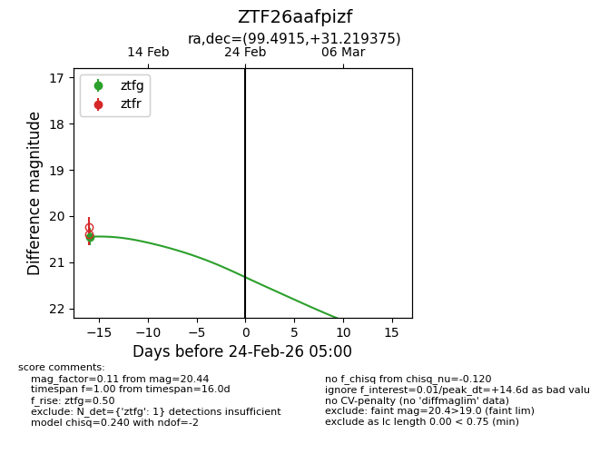
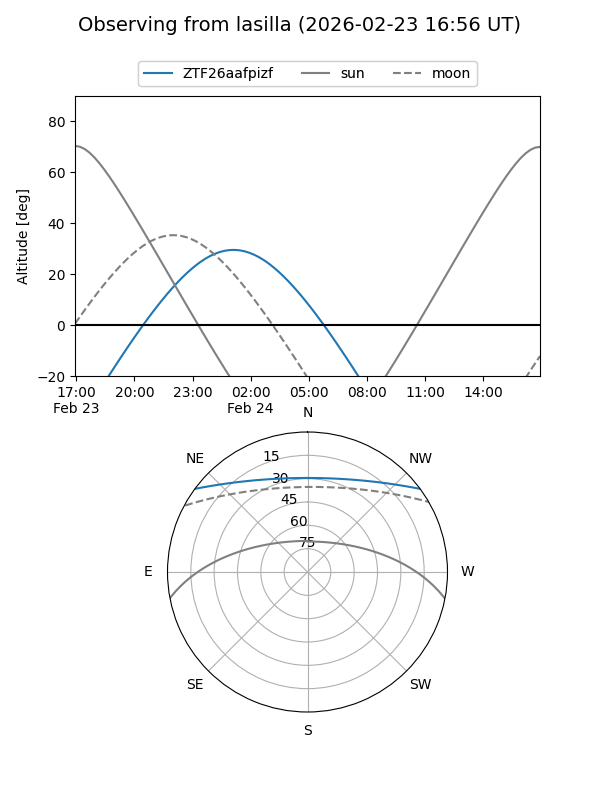
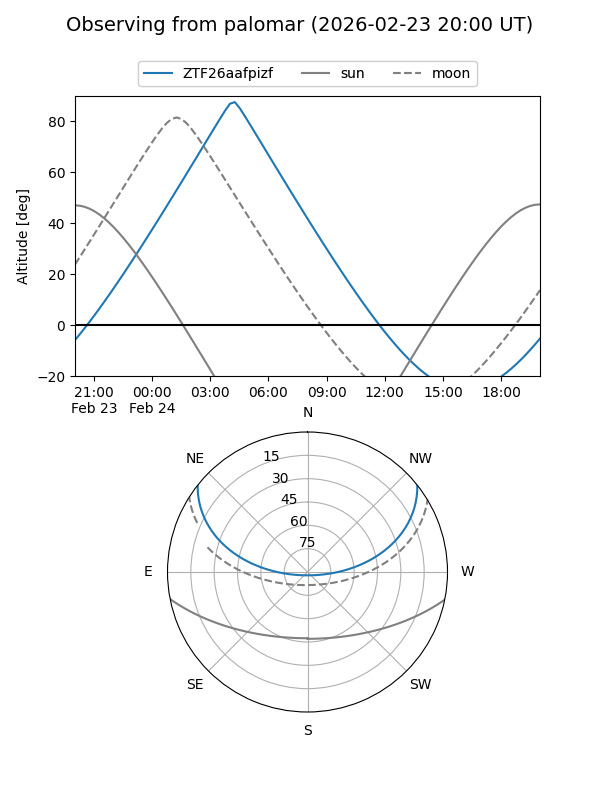

ZTF26aafpizf
Target ZTF26aafpizf at 2026-02-24 09:08
Aliases and brokers:
FINK: link
Lasair: link
ALeRCE: link
alt names
ZTF26aafpizf (ztf,fink_ztf)
Coordinates:
equatorial (ra, dec) = 99.4915,+31.21937
equatorial (HMS+DMS) = 06:37:57.97,+31:13:09.75
galactic (l, b) = (183.3711,+11.04794)
Flags:
Photometry:
last ztfg=20.44
1 ztfg detections
Lightcurve

Visibility


Additional plots